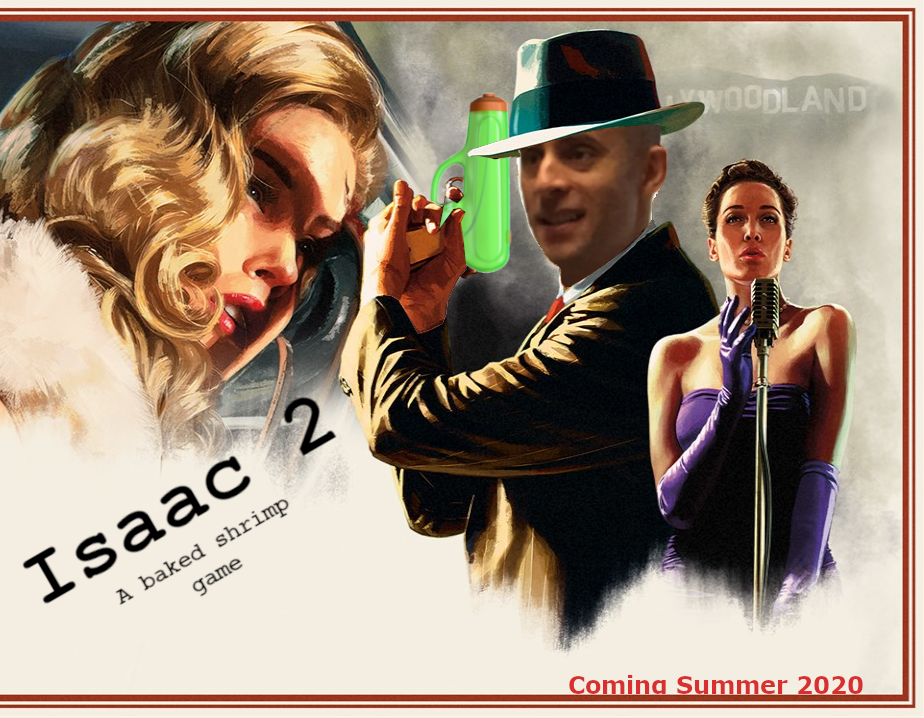

Isaac 2
1
Isaac 2 is a text adventure game I worked on over the summer of 2020. I originally got the idea to make a text adventure game after playing “Stories Untold”2. The main gameplay element in that game was you playing an ever unfolding story but interacting with each “chapter” via different game genres. One chapter would be a puzzle game, the next one a first person horror, and one of them was a text adventure. All of these seamlessly tied together into one big story. What originally surprised me was how well each different chapter was made, not just from a story point of view but from a gameplay perspective. The game felt good to play if that makes any sense? Puzzles were rewarding, first person horror kept me on the edge of my seat, and most of all, the text adventure was such a unique medium for both storytelling and gameplay that I felt I had to try it out.
It would be like creating my own D&D adventure
Is what I thought when I first decided on making a text adventure game. Having players explore a world, that I built solely through my words, painting a picture in their minds of the atmosphere without relying on graphics. Don’t get me wrong, modern day graphics are amazing, and some games–especially those with unique art styles–are improved tremendously by their graphics that help immerse you in the world. That, however, was out of my scope for making this game as I had neither the time, resources, nor knowledge to create graphics at a level that would satisfy me. So I settled for making my game solely through text, with no fancy 3D graphics.
I don’t know how to code
After deciding that I wanted to make a text adventure, my next major hurdle was figuring out how to actually make one. The last game I made–The Birth of Isaac–was made using RPG maker MV3, a software that let you make RPG games without needing to know code. I still didn’t know how to code so I would have to find another such software. I looked through dozens of bloated programs with UI that reminded me of games I would rent from the library until finally I settled on Inform 74.
Inform 7 isn’t so much a program as it is a language. Specifically, what Inform does is let you “program” text adventure games using the English language. Instead of setting up a bunch of complex variables, you simply write out what you want to happen in English and Inform processes it into a playable output. For example, say you wanted there to be a Kitchen with a spoon inside a drawer the player could open. You would simply write
The Kitchen is a room.
Drawer is a container in The Kitchen. Drawer is openable and fixed in place. Drawer is closed.
Spoon is a thing inside Drawer. The description of spoon is "A shiny spoon, you can see your reflection in the back."
This is as simple as code gets, it’s almost as if you’re having a conversation with your computer and describing your game to it. Inform also has a great community who have made plugins for it which allow you to save quite a lot of time. For this game, I used the “Conversation Framework” plugin by Eric Eve to make dialogue very easy to set up. Through inform I was able to put my thoughts and ideas into a playable game format without much hassle.
Endless Dilemma
Now I had the means to make the game, I had Inform figured out and I was ready to start. The only problem was I had no idea what kind of game I wanted to make. The game format did not help me either. Other game formats, like RPG’s or FPS' have relatively strict guidelines as to what games in that genre can be. With text adventure, there were no limits, I could quite literally make any game I could think of. With this freedom also came the drawback of having to decide from that very infinite pool of possible games. Originally, I was in the process of making a slice of life game, where the player would do tasks and interact with people with no real plot behind it. But I quickly realized that this was on the fun scale right with reading textbooks and vacuuming. So as quickly as that project started, I pressed Control+a delete.
I decided that instead of rushing to quickly start making a playable game it would be best to stop and figure everything out first. Coincidentally, I was in the middle of a playthrough of LA Noire5, a detective game set in 1940’s Los Angeles. It involved a quite unique game system, with the typical level progression involving 1. Going around the crime scene to find clues 2. Traveling to locations and questioning witnesses, using your clues to find flaws in their testimonies 3. Coming to a conclusion using your evidence and accusing someone. The nature of the clues finding and interrogations really interested me, it made me feel like I was the one doing the detective work. Instead of having to randomly point and click until something finally registered in the game I could use logic and the information I had to solve the mystery. Given how much I liked playing LA Noire I thought it would be great to make a text adventure game based on the same core gameplay principles. Players would walk around looking for clues, then piece them together along with conversations with NPCs in order to solve the mystery of CG’s death. And so, Isaac 2 took shape.
Burnout, Not the Car Kind
As I started working on Isaac 2, the weeks disappeared as quickly as a dropped pen, and all of a sudden it was nearing the end of the year. Now, after working on this game for almost half a year, I was getting bored. To put it frankly, I was sick of doing the same stuff every day, booting up my computer just to open the same file and edit the same code. I needed something new. And so that’s exactly what I did; I took a break. Taking breaks is essential in the creative process, a lesson I learned from this second endeavor. Isaac 1 I had managed to finish in one stretch of work, not taking any breaks, but since Isaac 2 was a much bigger project I knew that for the sake of both my mental health and the quality of the game I needed some time off. Now, taking time off doesn’t necessarily mean to just leave the project and never think about it. As I went about other things Isaac 2 was still in the back of my mind, be that in small features I noticed in other games I wanted to implement, certain writing styles in books that I thought could be interesting to use, or even other things that I thought would be funny easter eggs to add. Taking a break meant not dedicating myself to work on that game, but it didn’t mean forgetting it entirely, that was the key difference.
Coming back after my break, I got back into the game with newfound energy, finishing up what was left of the project. Taking a break was definitely crucial to Isaac 2, I feel that if I hadn’t taken that time off I would have just rushed to finish the project and be done with it instead of actually making a game that lived up to my expectations. Originally, I had planned to release it like I had released other games, by just sharing a copy of all the files, but in the end I found out that with Inform I could release the game as a playable html page, then host that for free on GitHub. Plus I had the added benefit of being able to roll out patches at any time and not have to “re-release” the game.
Final Thoughts
Isaac 2 was a very fun project, and I got to learn about a ton of different game formats while exploring its possibilities. Text Adventure games are often overlooked as being basic or bland, especially with all the new flashy games out there that make use of modern hardware. But, what these games lack in pizazz, they more than make up in their charm. There’s a certain feel you get when inputting text and seeing your player character do things, almost like you yourself are in that adventure. Plus, good authors can use the limitations of this genre to their advantage, helping the player imagine sprawling cities and ornate landscapes in their minds. The “graphics card” in this case is the player themselves, and that comes with its own advantages and disadvantages. If you’re new to the genre and have never really played a text adventure game I’d highly recommend at least checking one of them out, they will definitely surprise you.
If you’d like to play Isaac 2, please visit this page6 where you’ll be able to either play the game in your browser or download the game file if you already have a text adventure interpreter. Thanks for reading =)
-
The LA Noire cover art with Mr. Pallone’s face photoshopped over the protagonist’s ↩︎